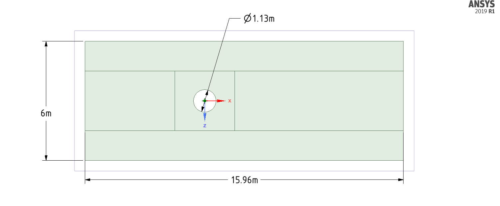

Ahmed Body Design for 0, 15, 30 degree
This groundbreaking project explores the aerodynamic characteristics of various Ahmed body configurations, a crucial benchmark in automotive aerodynamics. By comparing different slant angles, we gain valuable insights into vehicle aerodynamics and contribute to the development of more efficient automotive designs.Configurations Analyzed:
- 0-degree Ahmed body
- 15-degree Ahmed body
- 30-degree Ahmed body
- Optimized Ahmed body
Key Objectives:
- Investigate flow characteristics across multiple Ahmed body configurations
- Compare drag and lift forces for different slant angles
- Evaluate the impact of varying geometries on aerodynamic performance
Methodology:
Advanced Computational Fluid Dynamics (CFD) techniques were employed to simulate airflow around each Ahmed body configuration. The analysis involved:- Precise mesh generation and refinement for each model
- Turbulence modeling using state-of-the-art techniques
- Comprehensive pressure and velocity field simulations
Significant Findings:
| Configuration | Key Observation |
|---|---|
| 0-degree | Baseline performance, characterized by separated flow |
| 15-degree | Optimal balance between drag reduction and downforce |
| 30-degree | Increased downforce but higher drag coefficient |
| Optimized | Enhanced aerodynamic efficiency through innovative design modifications |

Flow over cylindrical Body
This innovative project explores the aerodynamic characteristics of cylindrical bodies at various angles of inclination. By analyzing multiple configurations, we gain crucial insights into fluid dynamics around cylindrical structures, contributing to advancements in fields such as aerospace engineering and wind turbine design.Configurations Analyzed:
- 0-degree cylindrical body
- 1-degree cylindrical body
- 10-degree cylindrical body
- 100-degree cylindrical body
Key Objectives:
- Investigate flow characteristics around cylindrical bodies at different angles
- Compare aerodynamic properties for varying inclinations
- Evaluate the impact of varying geometries on aerodynamic performanceEvaluate the impact of angle changes on overall performance
Methodology:
Advanced Computational Fluid Dynamics (CFD) techniques were employed to simulate airflow around each cylindrical configuration. The analysis involved:- Precise mesh generation for each model
- Comprehensive pressure and velocity field simulations
- Detailed visualization of flow structures
Significant Findings:
| Configuration | Key Observation |
|---|---|
| 0-degree | Baseline performance, providing a reference point for symmetric flow |
| 1-degree | Subtle asymmetry in flow patterns compared to the baseline |
| 10-degree | Notable changes in pressure distribution and wake formation |
| 100-degree | Extreme configuration showcasing complex flow separation and vortex shedding |
Analysis of Abrasive Water Jet Machining (AWJM)
This innovative project explores the fluid dynamics and wear characteristics of Abrasive Water Jet Machining (AWJM) using advanced Computational Fluid Dynamics (CFD) techniques. By analyzing various parameters and configurations, we gain crucial insights into the AWJM process, contributing to the optimization of this cutting-edge manufacturing technology.Configurations Analyzed:
- Water pressure: 450 MPa and 470 MPa
- Abrasive mass flow rate: 8 g/s and 25 g/s
- Abrasive shape factor: 1.0 and 0.9
Key Objectives:
- Investigate flow characteristics of water and abrasive mixtures in AWJM nozzles.
- Analyze the impact of different parameters on flow behavior and nozzle wear.
- Evaluate the performance of AWJM under various operating conditions.
Methodology:
Advanced CFD simulations were employed using FLUENT 19.2 to model the complex multiphase flow in the AWJM nozzle. The analysis involved:- 3D modeling of a commercial AWJ cutting head.
- Precise mesh generation with inflation layers for wall interaction.
- Discrete phase modeling for abrasive particles.
- Comprehensive pressure, velocity, and wear simulations.
Significant Findings:
| Configuration | Key Observation |
|---|---|
| Pressure (450 MPa vs 470 MPa) | Impact on flow velocity and potential wear patterns. |
| Abrasive flow rate (8 g/s vs 25 g/s) | Effects on mixture concentration and erosion rates. |
| Shape factor (1.0 vs 0.9) | Influence of particle irregularity on flow behavior and wear |
Computational Fluid Dynamics Analysis of Aircraft Aerodynamics
This sophisticated project investigates the aerodynamic characteristics of a commercial aircraft using advanced Computational Fluid Dynamics (CFD) techniques. The study provides valuable insights into aircraft performance and flow behavior under cruise conditions.Configurations Analyzed:
- 0-degree cylindrical body
- 1-degree cylindrical body
- 10-degree cylindrical body
- 100-degree cylindrical body
Key Objectives:
- Analyze flow characteristics around the aircraft body.
- Evaluate aerodynamic performance under cruise conditions.
- Investigate pressure distribution and flow patterns.
Methodology:
Methodology: Advanced CFD analysis was conducted using ANSYS 2019 R1, incorporating:- Detailed 3D aircraft geometry modeling.
- High-fidelity mesh generation with refined boundary layers.
- Flow field simulation using advanced turbulence models.
Significant Findings:
| Configuration | Key Observation |
|---|---|
| Flow Field | Uniform flow distribution with expected behavior around wing surfaces. |
| Pressure Distribution | Clear visualization of high and low-pressure regions. |
| Mesh Quality | Optimized mesh density with refined elements near critical areas. |
Aerodynamics Analysis of Tesla Cybertruck
This innovative project presents a comprehensive aerodynamic analysis of the Tesla Cybertruck using advanced Computational Fluid Dynamics (CFD) techniques. The study explores the unique geometric design's impact on vehicle aerodynamics and performance.Configurations Analyzed:
Key Objectives:
- Evaluate aerodynamic characteristics of the distinctive angular design.
- Analyze flow patterns and turbulence around the vehicle body.
- Assess the vehicle's aerodynamic efficiency.
Methodology:
Advanced Computational Fluid Dynamics (CFD) techniques were employed to simulate airflow around each cylindrical configuration. The analysis involved:- Detailed 3D modeling of the Cybertruck's angular geometry
- High-quality mesh generation with triangular elements
- Multi-physics flow simulation with turbulence modeling
Significant Findings:
| Configuration | Key Observation |
|---|---|
| Velocity Contours | Distinct flow patterns around angular surfaces with notable wake regions. |
| Turbulence Kinetic Energy | Concentrated regions of turbulence at vehicle edges and rear section. |
| Streamlines | Smooth flow distribution over the vehicle's upper surfaces with turbulent zones behind. |
Aerodynamics Analysis of Mahindra Cybertruck
This innovative project explores the aerodynamic characteristics of cylindrical bodies at various angles of inclination. By analyzing multiple configurations, we gain crucial insights into fluid dynamics around cylindrical structures, contributing to advancements in fields such as aerospace engineering and wind turbine design.Configurations Analyzed:
- 0-degree cylindrical body
- 1-degree cylindrical body
- 10-degree cylindrical body
- 100-degree cylindrical body
Key Objectives:
- Investigate flow characteristics around cylindrical bodies at different angles
- Compare aerodynamic properties for varying inclinations
- Evaluate the impact of varying geometries on aerodynamic performanceEvaluate the impact of angle changes on overall performance
Methodology:
Advanced Computational Fluid Dynamics (CFD) techniques were employed to simulate airflow around each cylindrical configuration. The analysis involved:- Precise mesh generation for each model
- Comprehensive pressure and velocity field simulations
- Detailed visualization of flow structures
Significant Findings:
| Configuration | Key Observation |
|---|---|
| 0-degree | Baseline performance, providing a reference point for symmetric flow |
| 1-degree | Subtle asymmetry in flow patterns compared to the baseline |
| 10-degree | Notable changes in pressure distribution and wake formation |
| 100-degree | Extreme configuration showcasing complex flow separation and vortex shedding |